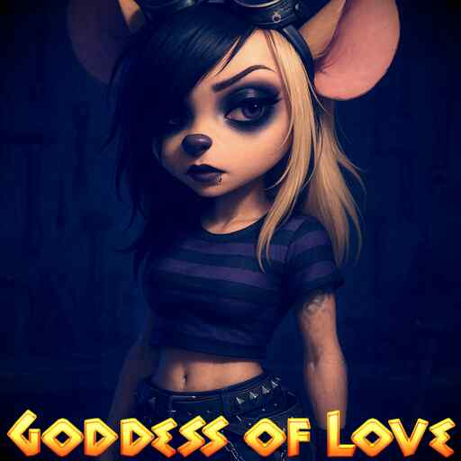

Gadget Hackwrench's Home & Workshop
Meet Gadget Hackwrench

The brilliant mechanic and inventor of the Rescue Rangers! Gadget can fix, build, or improve just about anything with whatever materials are at hand.
Gadget's Skills
- Master Inventor: Creates incredible machines from spare parts
- Mechanical Genius: Can fix any broken device
- Quick Thinker: Devises clever solutions in tough situations
- Team Player: Always helps her fellow Rangers
- Pilot: Flies the Ranger Wing with precision
Meet Gadget Hackwrench
The brilliant mechanic and inventor of the Rescue Rangers! Gadget can fix, build, or improve just about anything with whatever materials are at hand.
Chip and Dale: The Unlikely Rescue Rangers
Setting the Scene It was a typical day in the bustling city, but the Rescue Rangers were anything but typical today. A mysterious device invented by Gadget went awry, causing an unexpected transformation among the team. Gadget: The Emo Teenager Gadget Hackwrench, the brilliant mind of the Rescue Rangers, woke up one morning to find herself in the body of a moody teenager. Her once bright eyes were now lined with dark eyeliner, and her hair was dyed a deep black with streaks of purple. She wore oversized hoodies and ripped jeans, her expression often reflecting existential angst. “Why does everything feel so heavy?” she sighed, twirling a pencil in her fingers as she doodled in her notebook. “Nothing makes sense anymore… not even my inventions.” Dale: The Toddler Meanwhile, Dale was experiencing a completely different reality. He had transformed into a baby toddler, complete with chubby cheeks and a penchant for mischief. His oversized shirt hung loosely on his tiny frame, and his carefree laughter echoed through the treehouse. “Goo goo ga ga!” he giggled as he tossed toys around the room, oblivious to the chaos he was causing. Chip and Gadget exchanged glances, unsure of how to handle the little chipmunk's antics. Chip: The Old Chipmunk Chip, the ever-responsible leader, had aged dramatically overnight. His fur was now a silvery gray, and he sported reading glasses perched on his nose. Although he had the wisdom of age, he often felt frustrated with his teammates’ transformations. “Back in my day, we didn’t have these kinds of problems!” he grumbled, shaking his head as he struggled to keep up with Dale’s toddler energy. “We need to find a way to reverse this before it gets any worse!” Monty: The Aspiring Frenchman Then there was Monterey Jack, who had decided to pursue his long-held dream of becoming French. He donned a beret and a striped shirt, practicing his French accent while munching on cheese. “Bonjour, mes amis!” Monty exclaimed, waving an imaginary baguette. “I am now Monty le Fromage! We shall savor the cheese of life, oui oui!” The Quest for Normalcy With Gadget’s inventions malfunctioning, the team needed to work together to find a solution. Gadget, despite her emo demeanor, was determined to create a gadget that could reverse their transformations. “I may be feeling down, but I can still invent!” she declared, her passion shining through the darkness. “If we combine our strengths, we can fix this!” Chip, despite his age, rallied the team. “Alright, we need to focus. Monty, can you gather materials? Dale, um… try not to eat everything!” As Monty searched for cheese and other components, Dale waddled around, accidentally knocking over the materials. Chip sighed, but deep down, he knew they could overcome any obstacle together. A New Beginning After a long day of trials, Gadget finally created a device that glowed with potential. “This could work!” she exclaimed, her excitement breaking through her emo exterior. With everyone gathered around, they activated the gadget. In a flash of light, the transformations reversed, restoring the team to their original selves. Gadget’s joy returned, Dale was back to his playful self, Chip felt youthful again, and Monty wore his beret proudly. Conclusion “Maybe we learned something from all this,” Chip mused, glancing at his friends. “Sometimes, change can lead us to new perspectives.” Gadget smiled, “And I think I’ll keep some of that emo style… just for fun!” “Gotta love the cheese of life!” Monty chimed in, chuckling. With laughter and camaraderie, the Rescue Rangers were back, ready to take on whatever adventures awaited them next!
Gadget's Treehouse Home

Gadget lives in a cozy treehouse that doubles as the Rescue Rangers' headquarters. The house features:
- A main living area with gadgets and inventions everywhere
- A fully-equipped workshop for all her projects
- A kitchenette with improvised cooking tools
- A sleeping loft with a hammock
- A landing platform for the Ranger Wing
- Secret compartments for tools and spare parts
The treehouse is built primarily from found and recycled materials, showing Gadget's resourcefulness in every corner.
Gadget's Workshop
Main Workbench
Gadget's primary workspace where she creates most of her inventions. The bench is littered with tools, spare parts, and half-finished projects.
Tool Wall
A carefully organized wall with all of Gadget's essential tools, each with its own designated place. Includes several custom tools she invented herself.
Parts Storage
Containers filled with nuts, bolts, wires, and other components. Gadget can always find exactly what she needs, despite the apparent disorder.
Current Project: Ranger Wing Upgrade
Gadget is currently working on improving the Ranger Wing's propulsion system. She's experimenting with a new design that uses repurposed electric toothbrush motors for more efficient flight. The prototype shows promise but still has some "kinks to work out" as Gadget would say.
Gadget Hackwrench
The brilliant inventor from Rescue Rangers
Fun Facts About Gadget
Gadget's Amazing Inventions
Gadget Hackwrench is the team's resident inventor, creating incredible devices from everyday objects. She built the Ranger Wing (their flying vehicle) from various junk parts and regularly improvises solutions to their cases.
Gadget's Friends
Gadget works with Chip, Dale, Monterey Jack, and Zipper in the Rescue Rangers. Although she sometimes gets exasperated with their antics, she deeply cares for her friends and always comes through for them.
Gadget's Personality
Gadget is kind-hearted, intelligent, and resourceful. While occasionally absent-minded when inventing, she's brave in dangerous situations and always optimistic about solving problems. She has a unique speech quirk where she sometimes mixes up words ("I'll have this fixed in a jigglywatt!").